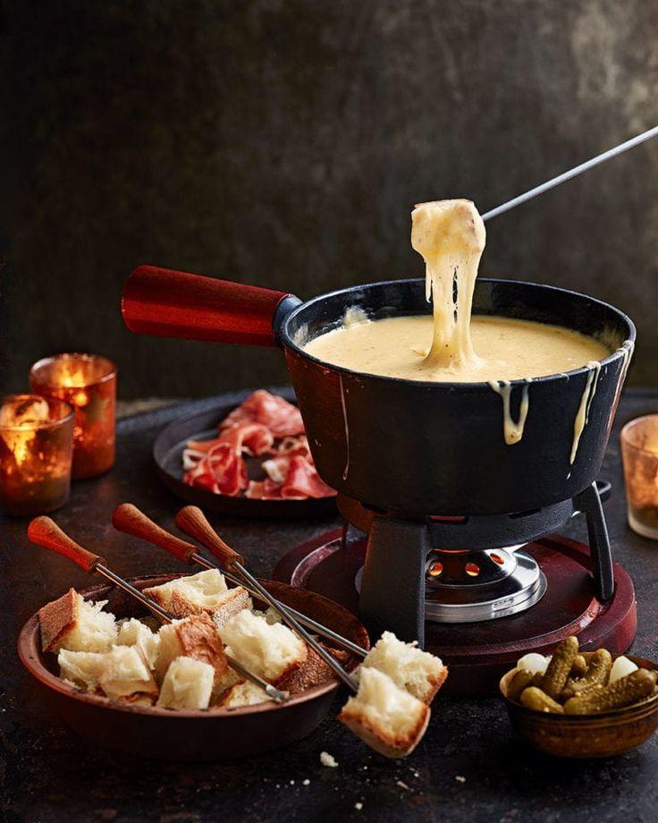
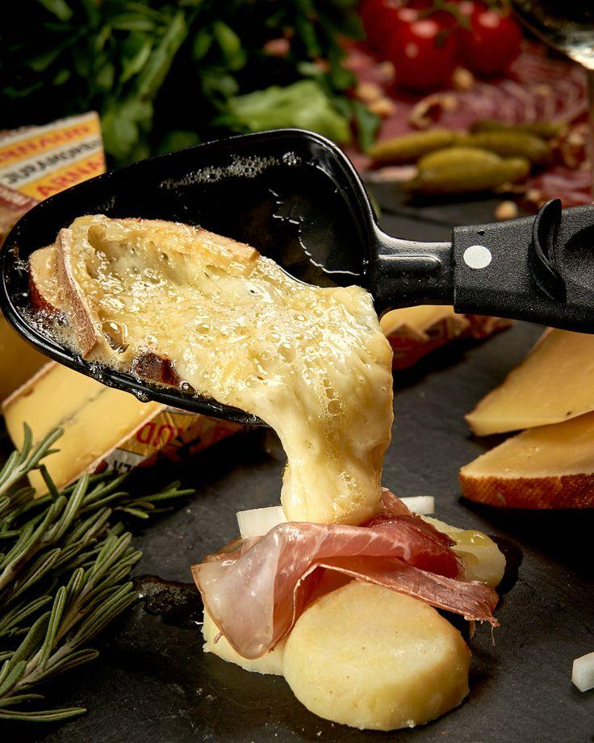
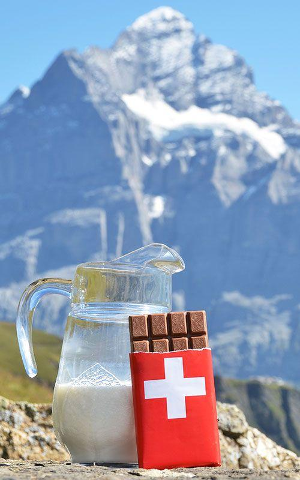
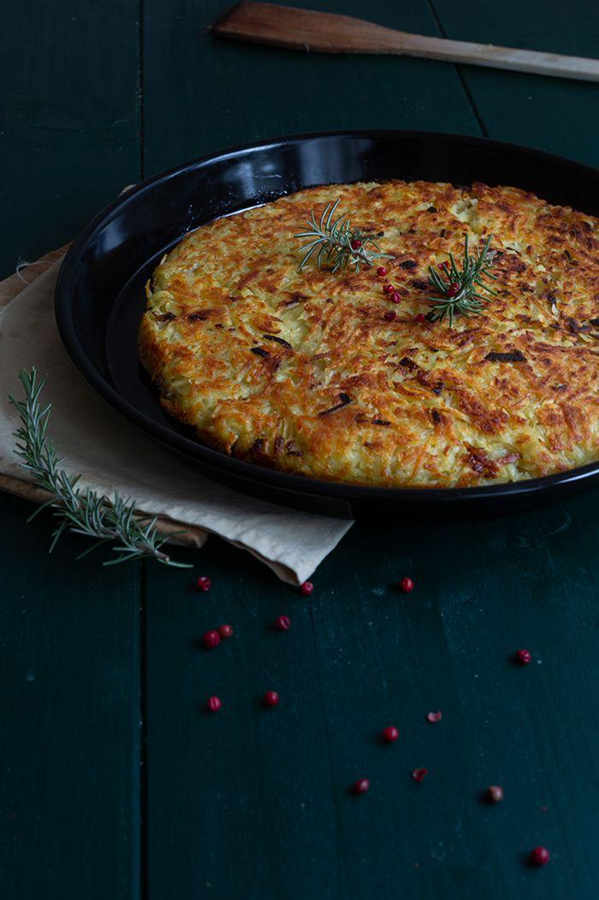

Swiss cuisine reflects the country's diverse regions and cultures. From hearty alpine dishes to gourmet chocolate, Switzerland offers a rich culinary tradition.

A creamy blend of melted Gruyère and Emmental cheeses, mixed with white wine and garlic, served in a pot for dipping bread cubes.

Melted raclette cheese scraped over boiled potatoes, pickles, and cured meats, served hot and shared among diners.

Renowned for its smooth texture and rich flavor, Swiss chocolate is made with high-quality cocoa and comes in various forms, including milk, dark, and iconic Toblerone bars.

A crispy, golden-brown potato dish, often served as a side or breakfast, made from grated potatoes fried to a crunchy texture.